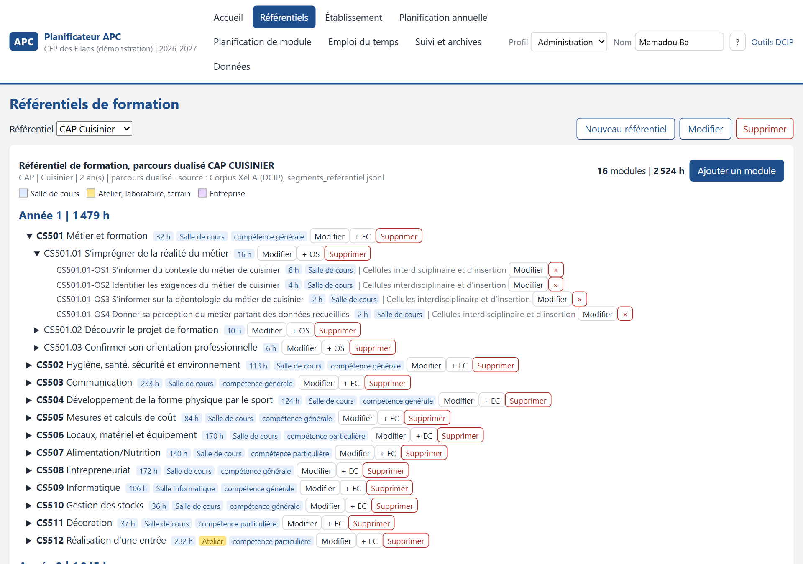
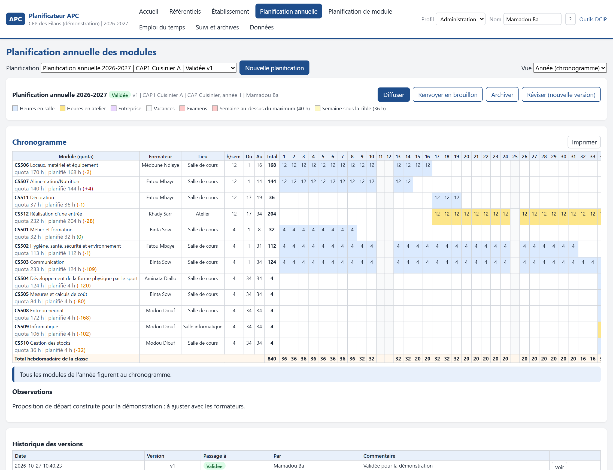
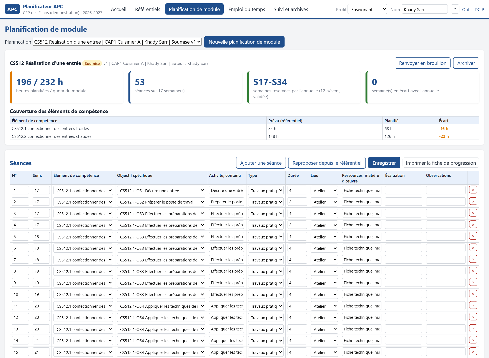
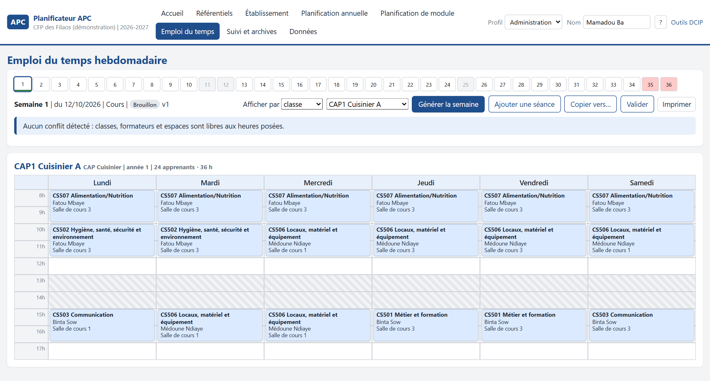
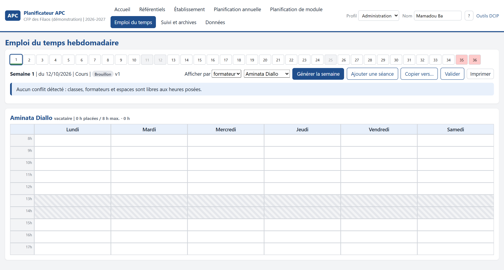

Le problème
Les référentiels de formation disent tout de ce qu'il faut enseigner : des modules, des éléments de compétence, des objectifs spécifiques avec leurs durées. Les guides d'organisation du ministère prescrivent même l'outil de planification : un chronogramme des semaines, dont découlent les emplois du temps des formateurs. Sur le terrain, pourtant, la planification se fait souvent sur un tableur ou sur papier, chaque formateur élabore son plan de cours sans le soumettre à personne ; l'emploi du temps se bricole semaine après semaine avec trop de classes pour trop peu de salles, des ateliers partagés et des vacataires qui n'ont que quelques jours.
Trois exigences
Partir du référentiel. Une planification qui ne descend pas des modules et de leurs durées n'est qu'un calendrier.
Tenir compte du réel. Un emploi du temps n'a de valeur que s'il respecte les indisponibilités des formateurs, la capacité des ateliers et les jours en entreprise des classes duales.
Garder la trace. Une planification diffusée engage l'établissement : elle ne doit plus bouger en silence.
Le principe retenu
Un référentiel, deux publics, une chaîne. L'administration arrête l'année de chaque classe. L'enseignant décline son module dans les heures qu'on lui a réservées. L'emploi du temps de la semaine naît des deux, sous contraintes, puis se corrige à la main. Chaque document suit le même cycle : brouillon, soumis, validé, diffusé, archivé.
L'application reprend le vocabulaire et les outils des documents nationaux : la liste des modules avec leur quota horaire, le chronogramme à 36 semaines où compétences particulières et générales courent en parallèle, les 36 à 40 heures hebdomadaires, la capacité de 24 apprenants par salle. Elle y ajoute ce que les guides prescrivent sans l'outiller : la déclinaison en emploi du temps et le suivi des versions.
Le référentiel

Les référentiels s'importent depuis le corpus documentaire de la Direction ou se saisissent. Chaque objectif spécifique porte sa durée et son lieu : c'est ce qui permet, plus loin, de réserver un atelier plutôt qu'une salle.
L'année d'une classe

L'administration crée une planification par classe. Une proposition automatique répartit les modules de l'année : les compétences particulières et générales en parallèle, les modules dans l'ordre du logigramme, le séjour en entreprise en fin d'année. Chaque ligne se corrige ensuite : formateur, lieu, heures par semaine, semaines de début et de fin. Le quota de chaque module et le total de chaque semaine sont contrôlés en continu. Trois vues : l'année, le mois, la semaine.
Le module de l'enseignant

L'enseignant choisit sa classe et son module. L'application lui propose des séances à partir des objectifs spécifiques et de leurs durées, dans les semaines que l'annuelle lui réserve. Il les ajuste : activité, type de séance, durée, lieu, ressources, évaluation. Il voit l'écart entre ce qu'il a planifié et le quota du module, ainsi que toute semaine où il déborde. Il soumet ensuite sa planification, qui est validée puis diffusée.
La semaine

| Contrainte respectée | D'où elle vient |
|---|---|
| jours ouvrés, jours fériés, plage horaire, pause | le calendrier de l'établissement |
| charge journalière maximale de la classe | les heures par jour fixées par l'établissement |
| indisponibilités et charge maximale de chaque formateur | les vacataires n'ont que quelques jours |
| type d'espace requis et capacité | un atelier de 16 postes n'accueille pas 24 apprenants sans qu'on le sache |
| jours et semaines en entreprise des classes duales | le parcours dualisé |
La génération place d'abord les formateurs les plus contraints, puis les ateliers, puis les blocs les plus longs. Elle s'arrête au premier créneau qui respecte tout ; ce qu'elle ne sait pas placer, elle le liste avec sa raison. La direction corrige ensuite à la main, verrouille ce qui doit rester, copie la semaine type vers les suivantes, puis valide et diffuse.

La vérification
L'application se diffuse sous la forme d'un programme Windows qui s'installe sans droits d'administrateur, ainsi que d'une édition macOS. Elle fait partie des Outils DCIP, le portail unique des applications de la Direction.
Ce que ce travail ne montre pas
Aucun code source, aucun installateur, aucune donnée réelle. Les captures proviennent d'un établissement de démonstration : les classes, les formateurs et les plannings y sont inventés. Toute ressemblance de nom avec une personne réelle serait fortuite.
Ce qui est présenté est la démarche : comment outiller la planification en approche par compétences sans retirer à la direction des études ni aux enseignants ce qui leur revient.
Application conçue au sein de la Direction des Curricula et des Innovations Pédagogiques, ministère chargé de la formation professionnelle et technique, Sénégal. Version 0.1, en essai depuis octobre 2026.
Oumar SALL, technopédagogue et Doctorant en Sciences de l'Éducation. Voir les autres réalisations ou le dépôt de présentation.